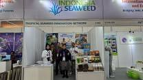
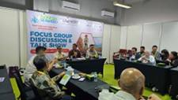

Promoting Indonesian Seaweed: A Successful Showcase at SIAL Interfood 2024

The Global Quality and Standards Programme (GQSP) Indonesia Phase 2 promotes Indonesian seaweed to increase market share. Product portfolios were showcased at the Salon International de l'Alimentation (SIAL) Interfood event 2024 in Jakarta, in collaboration with the Tropical Seaweed Innovation Network (TSIN), MMAF, the programme participated in the Indonesian Seaweed Pavilliun managed by ASTRULI.

The Global Quality and Standards Programme (GQSP) Indonesia Phase 2, in collaboration with the Tropical Seaweed Innovation Network (TSIN) and the Association of Indonesian Seaweed (ASTRULI), proudly participated in the the Salon International de l'Alimentation (SIAL) Interfood 2024 exhibition in Jakarta from November 13-16, 2024. This event marked a significant milestone in promoting Indonesian seaweed and its diverse applications, highlighting the achievements of our partners and the program's impact on the seaweed sector.

Our participation aimed topromote and showcase the GQSP project's support for the seaweed sector through highlighting the collaboration between the GQSP program, TSIN, and ASTRULI and promote seaweed-based products developed by SMEs partnered with the GQSP program such as CV Posko JaSuDa (South Sulawesi), Koperasi Mina Agar Makmur (KMAM) (Karawang, West Java), PT Winner Perkasa Indonesia Unggul (Yogyakarta), CV Lars JaSuDa (South Sulawesi), and CV Bulan Bintang JaSuDa (South Sulawesi). Over the four-day event, the TSIN booth attracted a diverse range of visitors from various backgrounds and countries. The level of interest was noticeably high, as attendees could explore a wide variety of seaweed species and products, all displayed in one place. From food items such as seaweed chips and seasoning to non-food products like body lotions, soaps, and bio-stimulants, visitors were able to experience the versatility of seaweed without having to go around the entire hall. This convenience provided them with a unique opportunity to discover multiple applications of seaweed in one visit. As a result, many visitors not only engaged with the exhibits but also purchased the displayed products.

The exhibition was officially opened by Mr Erwin Dwiyana, Director of Marketing, MMAF, followed by an opening ceremony attended by Mr Kamiya, UNIDO representative for the Timor Leste, Indonesia, and the Philippines, and Mr Nono Hartanto, Director of Seaweed, representative of the Directorate General of Aquaculture, MMAF. The booth received many visitors, including representatives from academic institutions interested in potential collaborations and technical assistance for SMEs. Several expressed strong interest in potential collaborations, particularly in the area of technical assistance for SMEs, which highlighted the growing recognition of the programme’s value in fostering innovation and sustainable development within the industry.

The booth continued to draw visitors, including partner associations and MMAF representatives, fostering valuable connections and insights. We also connected with SMEs in the seafood sector, supported by our partners, and explored booths from various countries showcasing innovative seaweed products. It was an enriching experience filled with learning and collaboration.
The booth saw a surge in interest, with visitors sampling raw seaweed and placing direct orders. One of our partners, an SME from Yogyakarta, sold out their Ulva seaweed chips. Visitors also expressed keen interest in a product catalogue, providing valuable feedback for our next exhibition. It was a day filled with enthusiasm, learning, and promising connections. The final day attracted even more visitors, since it was weekend, which allowed more people to visit the exhibition.

Visitors expressed keen interest in collaborating with the GQSP project, recognizing the shared goal of strengthening seaweed communities. They were guided to explore the project's website for comprehensive information. The QR code provided at the booth allowed visitors to easily access the programme's publications (manuals and SOPs) on the programme’s website and learn more about the initiative. The event was actively promoted on social media platforms, including Instagram and LinkedIn, and received detailed coverage in Infoakuakultur's November 2024 edition. The social media coverage helped to increase the visibility of the event and attract more visitors to the booth.

Besides participating in the exhibition, the programme also actively involved in the Focus Group Discussion (FGD) and Talkshows as part of the International Conference and Expo 2024. The representative of the programme, Mr Boedi Julianto, moderated the first day FGD that focused on stakeholder collaboration in addressing issues in Indonesia's seaweed business. The lively discussion highlighted the importance of collaboration among stakeholders to address the challenges faced by the seaweed industry in Indonesia. The representative of the programme, Mr Sudari, led the discussion on the second day that was centered on evaluating production and demand data to support a sustainable national seaweed industry. The discussion emphasized the need for accurate data to support the sustainable development of the seaweed industry in Indonesia.
Our participation in SIAL Interfood 2024 was a resounding success, showcasing the innovative seaweed-based products developed by our partners and highlighting the GQSP program's significant contributions to the seaweed sector. We look forward to building on these achievements and continuing to promote Indonesian seaweed on the global stage.
PSO - 2024